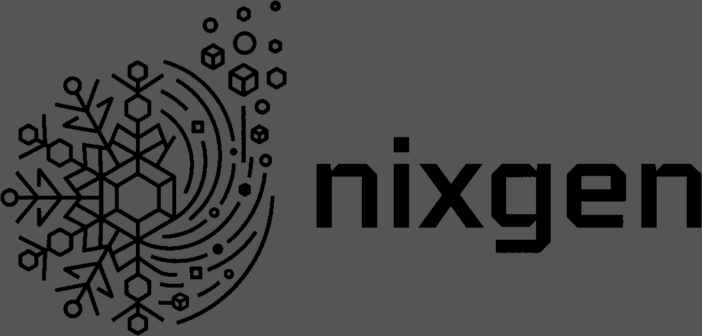
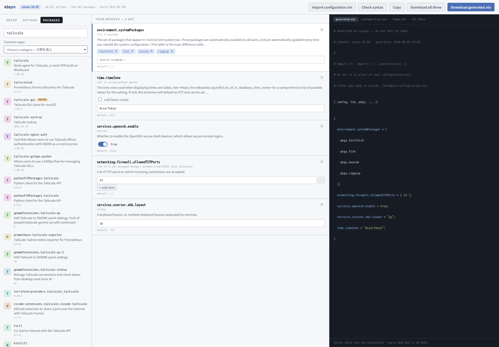
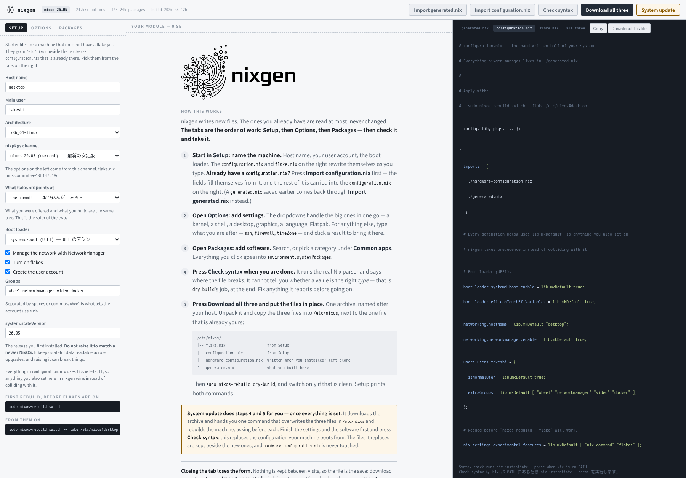
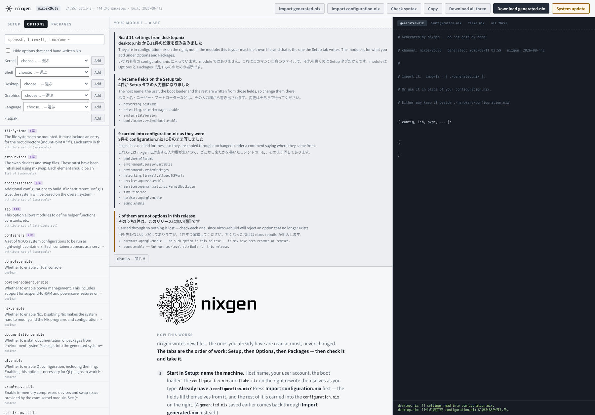

Without knowing a single option name. Search all 24,557 of them,
fill in values with real widgets, pick a desktop that works on the first login —
and take away a .nix file you can read before anything on your
machine changes.
オプション名を1つも知らないまま。24,557件を検索し、型に応じたウィジェットで値を入れ、初回ログインから使えるデスクトップを選び、マシンに何も起きないうちに中身を読める .nix を持ち帰れます。
$ nix run github:hatake716/nixgen
No clone, no pip, no npm — Python's standard library and a browser.
Nix remembers a github: reference for an hour, so add
--refresh if you want the newest build right away.
cloneもpipもnpmも不要。Pythonの標準ライブラリとブラウザだけです。Nixは github: の指す先を1時間記憶するので、すぐ最新版が欲しいときは --refresh を付けてください。
# Generated by nixgen — do not edit by hand. # channel: nixos-26.05 { config, lib, pkgs, ... }: { environment.systemPackages = [ pkgs.ripgrep ]; networking.firewall.allowedTCPPorts = [ 22 ]; services.openssh.enable = true; services.xserver.xkb.layout = "jp"; time.timeZone = "Asia/Tokyo"; }

01
Enabling a desktop is one line anyone can write. What nobody tells you is the rest: the greeter and its Wayland mode, the session name NixOS checks at build time, XWayland, the shell's autostart unit and the PATH it needs to launch anything, the terminal its default config asks for by name, the keyring, the bar that would otherwise appear twice. Every one of those was found by running a real machine and hitting the failure.
デスクトップを有効にする1行は誰でも書けます。誰も教えてくれないのはその周りの残り全部です。グリーターとその Wayland モード、NixOS がビルド時に検証するセッション名、XWayland、シェルの自動起動ユニットとアプリを起動できる PATH、既定設定が名指しする端末、キーリング、放っておくと2つ出るバー。どれも実機で動かして、実際に踏んで分かったものです。
02
Locale, console keymap, and the keyboard layout for X and
Wayland — those are two different settings, and the Wayland one is an
environment variable nothing documents. Then fcitx5 with mozc, and its front
end matched to the session your desktop actually runs. The app itself says
everything in both languages, and guards option paths from machine
translation, because a translated services.openssh.enable is not
valid Nix.
ロケール、コンソールのキーマップ、そして X と Wayland 両方のキーボードレイアウト。この2つは別の設定で、Wayland 側はどこにも書かれていない環境変数です。さらに fcitx5 と mozc、そして実際に動くセッションに合わせたフロントエンド。アプリ自身も全文を英日併記で表示し、オプション名は機械翻訳から守ります。訳された services.openssh.enable は Nix として無効だからです。
03
nixgen writes new files and never edits yours; the
configuration.nix you import is only ever read. It has no
privileged endpoint at all — the server cannot change your system,
because a local server with no authentication is a door any page in your
browser could knock on. It hands you one command instead. You read the file
first, dry-build before you switch, and the files it replaces stay
beside the new ones.
nixgen は新しいファイルを作るだけで、あなたのファイルは書き換えません。読み込んだ configuration.nix は最後まで読むだけです。特権の口は1つもありません。このサーバーにシステムを変更する能力がないのは、認証の無いローカルサーバーが、ブラウザで開いた任意のページから叩ける入口になるからです。代わりにコマンドを1つ渡します。中身を読んでから、dry-build で確かめてから切り替えられ、置き換えられたファイルは隣に残ります。
Because of the third, the first two are worth trying: a desktop you can switch away from cleanly is a desktop you can afford to try.
3つめがあるから、1つめと2つめを試せます。綺麗に元へ戻せるデスクトップは、気軽に試せるデスクトップです。
The order of work
進める順序
Then check it, then take it. The app says the same thing in the middle of the screen until you add your first setting.
Setup → Options → Packages と進み、確認してから受け取ります。最初の設定を足すまでは、アプリの画面中央にも同じ案内が出ています。
Starting it is the one command above. The first run takes about five
minutes while the search index is built; after that it starts in a second. It needs
flakes switched on — if nix flake --help prints help text you are set, and
the README shows
the one line to add if not. Then, in the browser:
起動は上のコマンド1つです。初回は検索インデックスを作るため5分ほどかかります。2回目からは1秒で立ち上がります。flakes が有効になっている必要があります。nix flake --help でヘルプが出れば準備済みです。出ない場合に足す1行は README にあります。そのあと、ブラウザで:
configuration.nix and flake.nix a fresh install still
needs. Already have a configuration.nix? Press
Import configuration.nix first and carry on here.environment.systemPackages..tar.gz with
configuration.nix, flake.nix and generated.nix.
Unpack it beside your hardware-configuration.nix, run
sudo nixos-rebuild dry-build, and switch only if that is clean.configuration.nix と flake.nix は、ここで出てきます。すでに configuration.nix がある場合は、先に Import configuration.nix を押して、そのままここから続けます。environment.systemPackages に入ります。configuration.nix・flake.nix・generated.nix が1つの .tar.gz で出てきます。手元の hardware-configuration.nix の隣に展開し、sudo nixos-rebuild dry-build を実行して、問題が無いときだけ切り替えます。On a new machine, putting the archive to work is three commands — and the System update button in the app runs them for you, asking before each:
新しいマシンでは、受け取った書庫を使うのはコマンド3つです。アプリの System update ボタンは、これを各段階の確認付きで代行します。
tar -xzf desktop.tar.gz
sudo cp desktop/*.nix /etc/nixos/
sudo nixos-rebuild dry-build # then: sudo nixos-rebuild switch
You can go back to any tab whenever you like — the order is where to start, not a door that shuts behind you. The README walks the whole path with every command written out.
タブにはいつでも戻れます。この順序はどこから始めるかの話で、一度離れたら戻れないわけではありません。全コマンドを書き出した通しの説明は README にあります。
How it works
しくみ
NixOS publishes machine-readable metadata for every option in every release: path, type, default, example, description. The whole catalogue comes from that file, so full coverage is a matter of parsing rather than of authoring.
NixOSは全リリースについて、全オプションのメタデータを機械可読な形で配信しています。パス、型、デフォルト値、例、説明文。カタログ全体がこのファイル由来なので、網羅性は「書く量」ではなく「パースの精度」の問題になります。
https://channels.nixos.org/nixos-26.05/options.json.br https://channels.nixos.org/nixos-26.05/packages.json.br
It is a sentence, not a schema — and there are 1,252 distinct ones:
構造化スキーマではなく、人間向けの文章です。しかも1,252種類あります。
"boolean" "null or (list of string)" "16 bit unsigned integer; between 0 and 65535 (both inclusive)" "attribute set of (submodule)"
These get parsed into a small type tree, and the UI picks a widget per node. 88.3% of options map onto a real widget; the rest fall back to a Nix text box. Most of those are container parents whose children are individually editable anyway.
これを小さな型ツリーに変換し、ノードごとにウィジェットを選びます。専用ウィジェットに対応できるのは88.3%で、残りはNix式の直接入力にフォールバックします。ただしその大半はコンテナの親であり、子は個別に編集できます。
A tree of 24,557 options is unusable. Results are bucketed by how the query
matched the path, then ordered by depth. Whole-segment matching does most of the work:
typing firewall puts networking.firewall.enable first, because
firewall is a complete path segment there while services.firewalld
only contains it as a substring.
24,557件のツリーを人間が辿るのは不可能です。クエリがパスにどう一致したかで段階分けし、階層の浅さで並べます。効いているのはセグメント単位の一致判定で、firewall と打つと networking.firewall.enable が先頭に来ます。こちらは firewall がドット区切りの完全なセグメントであるのに対し、
services.firewalld は部分文字列として含んでいるだけだからです。
Starting from scratch
ゼロから始める
Setup is the first tab and the one the app opens on: for a machine that has
just been installed, these are the files you need before anything else. It produces the
configuration.nix that imports the
generated module and the flake.nix that builds the system — host name, user
account and groups, architecture, boot loader, NetworkManager, flakes and
stateVersion. Switching a block off removes its lines entirely rather than
commenting them out, so the file stays as short as what you actually asked for.
Setup は一番左にあり、起動時に開くタブでもあります。インストール直後のマシンで最初に必要になるのがこれらのファイルだからです。生成モジュールをimportする configuration.nix と、システムをビルドする flake.nix を出力します。ホスト名、ユーザーとグループ、アーキテクチャ、ブートローダー、NetworkManager、flakes、stateVersion をすべて画面から編集できます。オフにした項目はコメントアウトではなく行ごと消えるので、実際に指定したものだけが残ります。
Every definition in that configuration.nix is wrapped in
lib.mkDefault, so what you set in nixgen wins instead of colliding. Where the
two files do define the same option, the line turns red and the card says so — because two
mkDefault definitions of equal priority make NixOS refuse to choose.
その configuration.nix は全ての定義を lib.mkDefault で包んでいるので、
nixgen側で設定した値が衝突せずに優先されます。それでも両方が同じオプションを定義した場合は、行が赤くなりカードにも表示が出ます。同じ優先度の mkDefault が2つあると、NixOSはどちらを採るか決められないためです。
The nixpkgs channel is a choice too — the current numbered release, one
of the two before it, or nixos-unstable, discovered by asking the channel
server rather than from a list that goes stale. Whichever you pick, everything comes from
it: the options, the packages, the flake.nix, the
system.stateVersion. What flake.nix names is a second choice: the
branch by default, so updates arrive; or the exact commit the option list was read at, so
the system you build has the options the form offered you and nothing else. The tab shows
when the list was published, and offers to rebuild once that has stopped being true — the
next day on unstable, after some weeks on a release.
nixpkgsのチャンネルも選べます。最新の安定版とその前2つ、それに
nixos-unstable。固定の一覧ではなくチャンネルサーバーに問い合わせて作るため、古くなりません。選んだチャンネルから、すべてが来ます。オプションもパッケージも flake.nix も
system.stateVersion もです。その flake.nix が何を指すかも選べます。既定はブランチで、更新が順に届きます。もう一方はコミットで、画面に出ていたオプションと実際にビルドされるものが必ず一致します。オプション一覧の公開日時も表示し、古くなれば再構築を提案します。unstableなら翌日、番号付きリリースなら数週間後です。
The boot loader is a choice, not a fixed block: systemd-boot for UEFI, GRUB for BIOS (which then asks for the disk), or none if another module already sets one. Both variants are checked by evaluating them as an actual NixOS system.
ブートローダーは固定ではなく選択式です。UEFIならsystemd-boot、BIOSならGRUB（ディスクの指定欄が出ます）、他のモジュールに任せるなら「none」。どちらの構成も、実際のNixOSシステムとして評価して確認しています。

Importing
読み込み
The file goes to nix-instantiate --parse first, so the real Nix parser
does the work — no regexes over your source. Your file is opened read-only and never written to.
Every setting ends up in the output, in one of four ways.
ファイルはまず nix-instantiate --parse に渡します。本物のNixパーサに解析させるので、ソースを正規表現で殴る必要がありません。ファイルは読み取り専用で開かれ、書き換えは一切しません。すべての項目が4通りのいずれかで出力に入ります。
The machine's own details — host name, user account and groups, architecture, boot
loader, NetworkManager, flakes, system.stateVersion — fill the Setup tab
instead. Those are fields there, and the starter configuration.nix is what writes
them, so they move rather than being put in both files. The import summary lists which did.
そのマシン自体を表す項目(ホスト名、ユーザーとグループ、アーキテクチャ、ブートローダー、NetworkManager、flakes、system.stateVersion)は、Setup タブに入ります。これらは Setup タブの入力欄であり、スターターの configuration.nix が書くものなので、両方のファイルに書くのではなくそちらへ移します。どれが移ったかは取り込みサマリに出ます。
Literals that fit the widget. mkForce and mkDefault
are unwrapped, and names in paths fill the <name> slot.
ウィジェットに載るリテラル。mkForce と mkDefault は展開し、パス中の名前は <name> スロットに入ります。
lib.mkIf, let references. A form cannot hold a
conditional, so it is copied through unchanged.
lib.mkIf や let 参照。フォームは条件分岐を保持できないので、そのままの形で書き出します。
Renamed, removed, or inside a free-form submodule. Highlighted, so a dead option becomes visible instead of silently breaking the build.
改名・削除されたか、自由形式サブモジュールの中。色分けされるので、廃止されたオプションが黙って残ることがありません。
imports and friends, with relative paths restored, so
./hardware-configuration.nix still resolves — and with any reference to
the generated file itself removed, since a file cannot import itself.
imports など。相対パスを復元するので
./hardware-configuration.nix も解決されます。生成ファイル自身への参照は削除します（自分自身はimportできないため）。

Correctness
正しさの検証
8,000 randomly chosen options per run, seeded with hostile values — embedded
quotes, backslashes, ${, newlines, '', empty strings, Japanese text —
and hostile <name> substitutions including Nix keywords. Every run parses.
Three real bugs came out of it:
1回につきランダムな8,000オプション。値には敵対的なもの(クォート、バックスラッシュ、${、改行、
''、空文字列、日本語)を、<name> の置換にもNix予約語を含む敵対的なものを入れています。全て通過します。この過程で実際に3件のバグが見つかりました。
| Bugバグ | Why it matters影響範囲 |
|---|---|
| <name> ≠ <n> ≠ * | 5,082 options (21%) carry a placeholder, and not all look alike 5,082件(21%)がプレースホルダを含み、形が一様ではない |
| [ -1 ] | A syntax error — negative numbers need parentheses in a list 構文エラー。リスト内の負数には括弧が必要 |
| if / rec / or | Reserved words must be quoted as attribute names 予約語を属性名にするにはクォートが必要 |
Attribute paths are rendered segment by segment, and any segment that is not a
plain identifier is quoted — so a vhost named my site.example.com comes out as
valid Nix rather than a broken file. The starter files get the same treatment: they are
evaluated as an actual NixOS system, down to config.system.build.toplevel.
属性パスはセグメント単位でレンダリングし、通常の識別子でないものは自動でクォートします。my site.example.com という名前のvhostも、壊れたファイルではなく有効なNixになります。スターターファイルも同様で、実際のNixOSシステムとして config.system.build.toplevel まで評価して確認しています。
Limits
対応していないこと
nixos-unstable makes everything unstable
— the options, the packages, the flake.nix, the
system.stateVersion. Taking packages from one channel and options from
another is not supported and is not planned: packages could be pulled across with an
overlay, options could not, because an unstable services.foo.* needs
unstable's module set. A catalogue where half the entries are selectable would be worse
than no support at all.nix-instantiate --parse, which
catches malformed Nix. Whether a value has the right type is for
nixos-rebuild dry-build to say.nixos-unstable を選ぶと、すべてunstableになります。オプションもパッケージも flake.nix も system.stateVersion もです。「オプションは安定版から、パッケージだけunstableから」という使い方はできません。今後対応する予定もありません。パッケージだけならoverlayで持ってこられますが、オプションはそうはいきません。unstableの
services.foo.* は、unstable側のモジュールがあって初めて成り立つからです。カタログの半分しか選べない道具になるくらいなら、対応しないほうがましだと考えています。nix-instantiate --parse で、壊れたNixは捕まえます。値の型が正しいかどうかを判断できるのは nixos-rebuild dry-build だけです。Changelog
更新履歴
Every release is listed in CHANGELOG.md, with the English entries first and the Japanese ones below.
各バージョンの変更点は CHANGELOG.md にまとめてあります。前半が英語、後半が日本語です。
The version you are running is printed in the header of the app, next to the
option counts. If a fix does not seem to have landed, check that number first — an
old copy being served looks exactly like a broken fix. Three things serve one: the
browser cache (Ctrl-Shift-R), Nix's one-hour memory of github:
references (nix run --refresh …), and a pinned profile install
(nix profile upgrade nixgen).
動かしているバージョンは、アプリ画面上部のオプション数の右側に出ています。直したはずの挙動が変わらないときは、まずこの番号を見てください。古いファイルが配信されている状態と、修正が効いていない状態は、見た目では区別が付きません。原因は3つあります。ブラウザのキャッシュ(Ctrl+Shift+R)、Nixが github: の指す先を
1時間記憶していること(nix run --refresh …)、nix profile で入れたものが固定されていること(nix profile upgrade nixgen)。